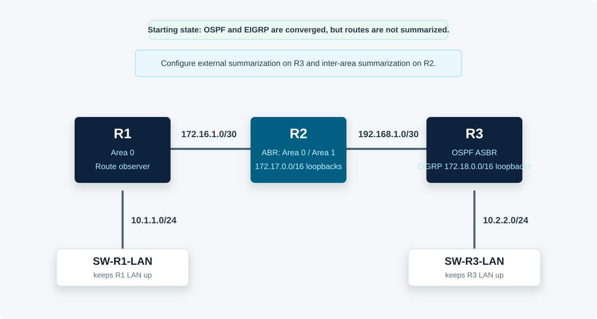

Overview
This lab demonstrates two OSPF summarization mechanisms. R3 redistributes EIGRP routes into OSPF and uses summary-address to summarize external routes. R2 is an ABR between area 0 and area 1 and uses area range to summarize inter-area routes.
All commands in this guide use the CML Ethernet interface names shown in the topology.
Topology
R2 is the ABR between area 0 and area 1. R2 owns four area 1 loopback networks in 172.17.0.0/16. R3 owns four EIGRP loopback networks in 172.18.0.0/16 and redistributes them into OSPF as external routes.

Task 1: Verify Unsummarized Routes on R1
Confirm that R1 sees individual 172.17 routes as inter-area OSPF routes and individual 172.18 routes as external OSPF routes.
! R1
show ip ospf neighbor
show ip route ospf
show ip route 172.17.0.0
show ip route 172.18.0.0
show ip ospf database summary
show ip ospf database externalThe four 172.17 networks and four 172.18 networks can both be summarized as /22 ranges because their first 22 bits match.
Task 2: Summarize R3's Redistributed EIGRP Routes
On R3, summarize the 172.18.0.0/24 through 172.18.3.0/24 routes as one external OSPF route.
! R3
conf t
router ospf 1
summary-address 172.18.0.0 255.255.252.0
end
show running-config | section router ospf
show ip ospf database externalsummary-address is used on an ASBR to summarize routes redistributed into OSPF.
Task 3: Verify the External Summary on R1
Return to R1 and confirm the four external 172.18 routes were replaced by a single 172.18.0.0/22 route.
! R1
show ip route ospf
show ip route 172.18.0.0
show ip ospf database external 172.18.0.0Expected result: R1 should see one OSPF external route for 172.18.0.0/22 through R2.
Task 4: Summarize R2's Area 1 Loopbacks into Area 0
On R2, summarize the 172.17.0.0/24 through 172.17.3.0/24 area 1 routes as they are advertised into area 0.
! R2
conf t
router ospf 1
area 1 range 172.17.0.0 255.255.252.0
end
show running-config | section router ospf
show ip ospf database summaryarea range is configured on an ABR. The area number is the area the routes are summarized from.
Task 5: Verify the Inter-Area Summary on R1
Confirm that R1 now sees one inter-area route for 172.17.0.0/22 instead of the four individual 172.17 routes.
! R1
show ip route ospf
show ip route 172.17.0.0
show ip ospf database summary 172.17.0.0Expected result: R1 should have one O IA route for 172.17.0.0/22 and one O E2 route for 172.18.0.0/22.